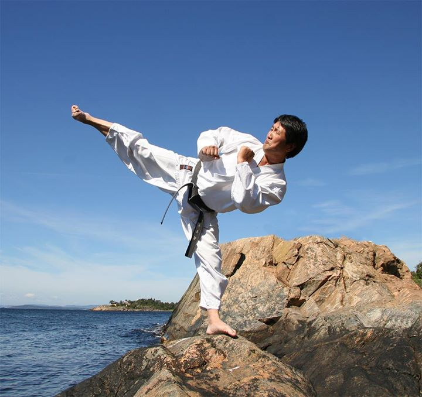

Arrangement
Sensommertrening med TTU

Grandmaster Cho og TTU inviterer til sensommtrening i Hoveddojangen på Osterøy. Bli med på en fantastisk flott start på høsten, med god trening, ny lærdom, nye venner og en flott opplevelse på tampen av sommeren.
Om du ønsker å delta, hør med oss på trening. Jo flere jo bedre!
Program finner du her
eller besøk ttu.no